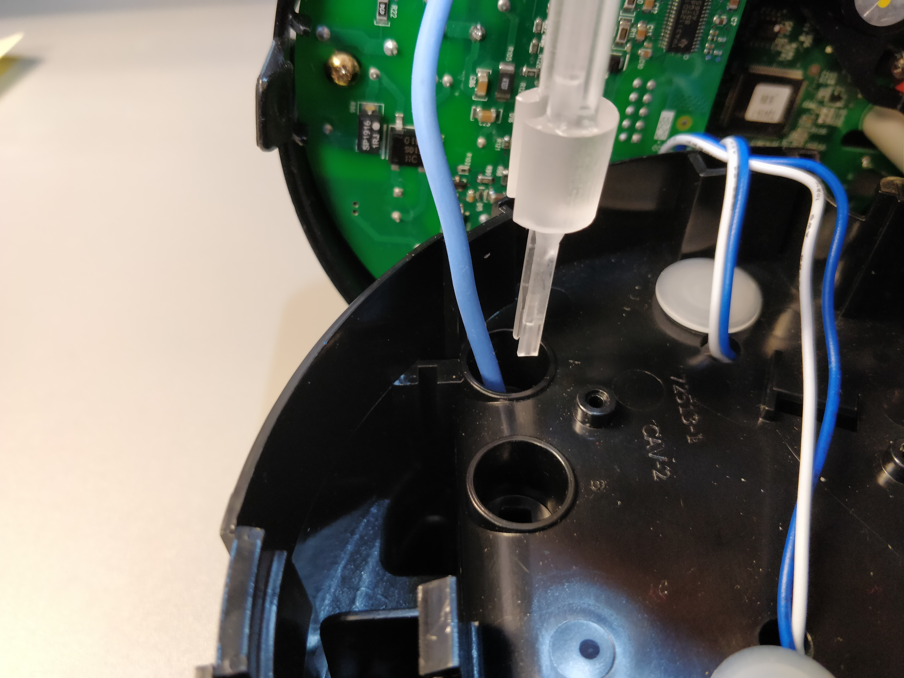

Industry Experience
Mechanical Engineering Co-Op - Landis+Gyr
During my three co-op rotations at Landis+Gyr - a smart metering, grid solutions, and infrastructure company - I had a wide variety of daily tasks. I edited and maintained the global mechanical engineering department's newsletters and reports, edited and created product models, part drawings, and assembly drawings, and worked in the test lab assembling and testing products. In particular, I created many fixtures and tools for our test lab. I've detailed some of my favorites down below. For all of these projects, I used Creo Parametric to model the products and Windchill to manage the assemblies I created.
Project Directory
PCB Reprogramming Fixture
One of the PCB cards at Landis+Gyr is designed with a female connector for programming that is clipped off after initial flashing. However, the test lab had the need to reprogram a large number of these PCB cards, and soldering connectors to the programming connectors on every PCB was not a feasible option. To solve this problem, I designed a fixture with spring loaded pins to clamp around the PCB card with a connector to the computer afixed on top. This allows the PCB card to be inserted and swapped out rapidly for easy flashing of a large stock of PCB cards.
The fixture was printed using the in-house Stratasys PolyJet. The first iteration had a snap-fit design to keep the fixture shut. Unfortunately, due to the layers and material properties of the 3D printed part, it frequently fractured. Instead, in the second iteration, magnets were instead glued into the fixture to hold it closed, and a rubber band attached to the outside to give more grip.
I did my co-op during the first half of my undergraduate, so it was a really great experience to learn so much through first-hand experience. This fixture was one of the first design projects I ever did on my own. It taught me a lot about designing for human factors and additive manufacturing.
Gas Sensor Test Fixture
For this project I was tasked with making a test fixture to calibrate positioning of a sensor to most optimally sense the number of revolutions of a gas meter. A previous iteration had been made prior to this but lacked the range of +/- 2 inches desired and the precision in locating the dial and sensor in relation to each other that a fixture provides. Because the dial and sensor are both small, the precision needed was very high. As such, a 3-axis micrometer stage was used to calibrate the optimal positioning between the sensor and gas dial. The rest of the design was based on the dimensions of the stage. The dial was attached to a motor meant to simulate the rate of the gas meter dial in operation. This design was also 3D printed using the in-house Stratasys PolyJet because we wanted the high level of precision a 3D printer provided for this test fixture. To save on material costs, the internal structure was hollowed out and filled with support material instead.
Crimp Terminal Assembly Tool
This project is one I'm most proud of from my time at Landis+Gyr. A tool was needed to assemble crimp terminals at the bottom of a hole within in assembly. In order to accomplish this, I designed a passive insertion tool that holds onto the terminal, aligns with the assembly, and passively releases from the terminal after it's assembled. Bumps along the tool channel held the wire in place once the terminal was slid into the tool. The passive release mechanism was achieved through two inclines that engage when the tool is being pulled out in order to push the sides of the tool out like cantilevers. The tool was machined out of polycarbonate at a rapid prototyping company, as we only needed a small run for the assembly line to fix the immediate assembly problem. This project was something I really enjoyed working on because it was the first project I'd taken ownership of that ended up being used on an assembly line, rather than just in the lab by one or two people. I learned a lot about designing for manufacturability and ergonomics of tool design through this project.

(4) Pull Tool Out (Passive Release Mechanism)
Innovation Intern - Steelcase
At Steelcase, I interned as a part of the Innovation Management Office, a team that focused on exploring new technologies and their potential applications to improving the operations of the business. As a part of the IMO, I was given a lot of freedom to self-manage and self-direct my explorations within the projects I was given. It was a great chance to learn, explore, and be creative in my work. I also spent a lot of time meeting and talking to employees across the company in a wide variety of roles. It was a wonderful opportunity to develop a more wholistic view of how a business is run and develop an interdisciplinary view of the work I do.
Project Directory
Redesigning a Die-Cast Zn-Al Part to Glass-Filled Nylon
At Steelcase, I was tasked with redesiging a lock housing critical to the design of a table from its original die-cast zinc-aluminum alloy to be made with injection molded glass-filled nylon. Due to the complexity of the design, the differences in manufacturing processes, and how the part interfaced with the rest of the assembly, this was one of the most involved and difficult projects I've ever worked on. This project was not only complex in the engineering required, but it also involved cost analyses and creating business cases, giving me an overall wholistic experience into what it takes to take a project from idea to production. The details of the project are proprietary information, but a summary of the work I did is below.
To begin, I met with engineering, the test lab, and FEA and plastic injection molding consultants to fully understand the current design, the functionality of its features, difficulties and differences of both manufacturing processes, and standards a new design would need to pass. Then, I performed some FEA analyses to ensure the material change would withstand the current assembly processes to supplement existing FEA of the new material in functionality. I then worked through several iterations of design changes for the new manufacturing method, going over them with experts at the company. I used Creo Parametric and Creo Simulate to create the models and FEA analyses.
As a part of this new redesign, I also communicated with vendors to create new custom fasteners that were necessary for the project. I created a cost-analysis that showed due to a variety of factors, with a successful redesign, the company could save over a million dollars a year. Using this cost-analysis, I also wrote a business case to be used as a proposal for the company. I was also given the incredible opportunity to present some intermediate results to our VP of Global Operations and other leaders across the company.
Through this project, I had the opportunity to learn a breadth of practical knowledge about plastic injection molding and designing for manufacturability that isn't covered in depth in coursework. It was also a great experience to be guided through the various factors, like cost analyses and customer experience, beyond engineering capability that goes into making a design decision.
Exploring PLM & the Digital Thread
During my internship at Steelcase, one of the projects I was given a very open-ended objective to explore the digital thread - a concept within PLM (product lifecycle management) where technology, PLM softwares, and metadata are leveraged to facilitate concurrent work, collaboration, and faster time to market. I then had the opportunity to present the findings of my exploration to people and leadership from numerous different teams all across the company.
To best demonstrate the full capabilities of leveraging a digital thread in PLM software, I created a dummy product design with numerous parts to create options and variants with. Using this dummy product, I moved it through the PLM process, creating engineering and manufacturing BOMs, various metadata, implementing change processes and annotations, manufacturing processes and work instructions, and more. I used Creo Parametric to create the product and Windchill, PTC's PLM software, to manage the PLM process. By creating a product and taking it through the entire PLM process, I was able to craft a narrative demonstrating the benefits of connected data created upstream and leveraged downstream. I presented this to numerous teams and leadership across the company, including our VP of Global Operations and Chief Technology Officer.
I unexpectedly came to really enjoy learning so much about the PLM process and understanding a high-level view of how various teams work together to create a quality product. It's important to see first hand how while certain practices may be more troublesome for a team in the moment, it saves work and creates higher quality product in the long run with better PLM practices.
Intern Project - Digitization of Quality Inspection Logs
A separate project assigned as a group intern project in the IT department coincidentally was a great demonstration of why PLM and the digital thread is so vital. We were tasked with creating a digital solution to digitizing the current analog quality inspection logs. While an isolated, custom solution would've been easier to implement as a project, using existing software the company already owned would allow the quality team to leverage existing product data in our PLM system, creating a better solution for the long term. As a team, we created a prototype interface to show the quality team what our solution was and why we chose to use ThingWorx and Windchill to build the inspection log architecture.